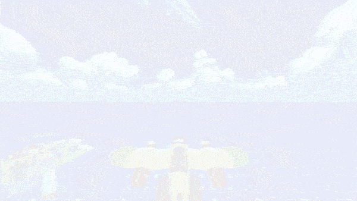
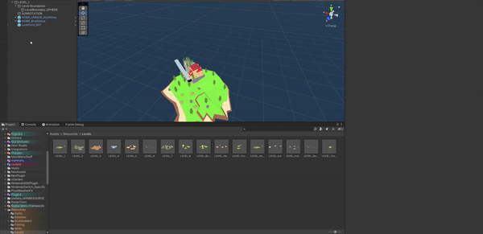
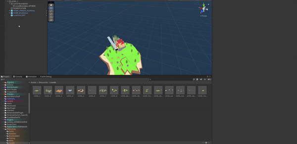
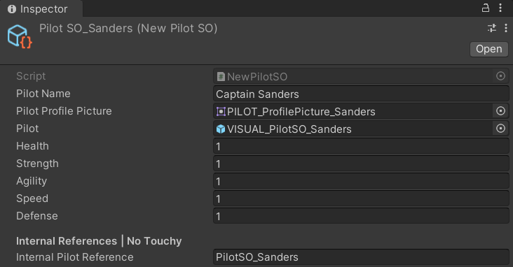
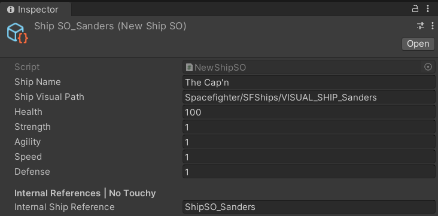
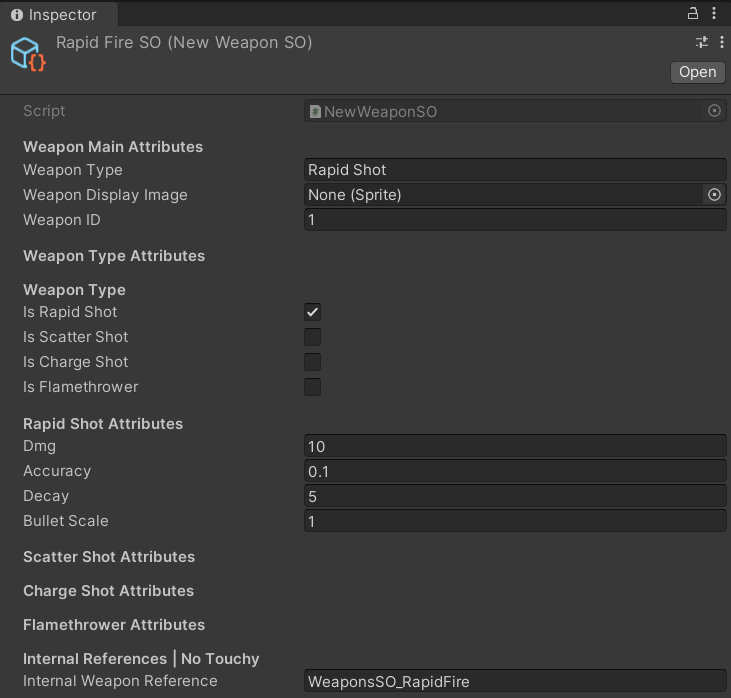
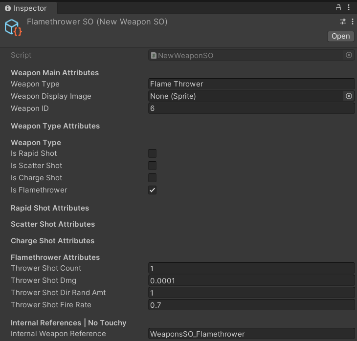
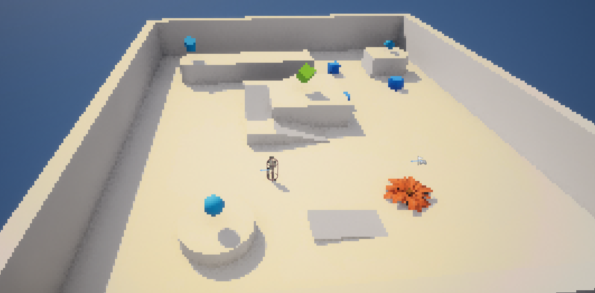
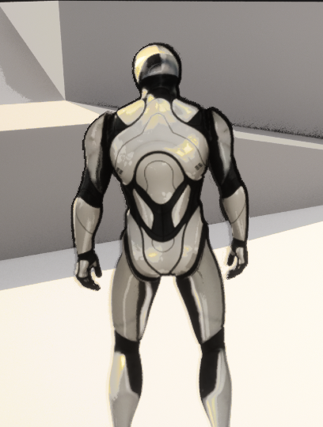
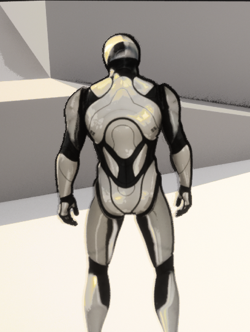

Skycadia | Intership, Dec 2022 - Present
CC - Studio Nisse | Intership, Dec 2022 - Present

Projectile Fight
Unreal Engine 5 Exploration
At the age of 7 I was introduced to Java using Eclipse through my father — the programming field has held my interest ever since. Having become an avid game player and developer, it’s become paramount to me to provide the support and skills needed to develop games I can be proud of. Ultimately, game programming was the most direct way to mix my passion for gaming and programming together to create unbelievable worlds.
Within gaming and programming, the role of support has always been a forte. In the end though the goal is to reach a position that allows the opportunity to lead and manage a team of my own. My current skillset includes C++, C#, Python, Godot, Unity Engine and Unreal Engine 5 which have allowed me to begin developing my own game concepts.
Skycadia is a retro arcade dogfighter released on Xbox Series X, Nintendo Switch, and Steam that I worked on as a Unity developer. I authored development tools using C# and Rider primarily focused on the creation and systems supporting weapons, ships, and dialogue on the project.
This tool uses Prefabs and ScritableObjects to easily create Lore points that popup information and dialogue for the player.
Creating this small tool helped speed up the creation proccess immensely, create a ship was just a few clicks and a dragon and a drop away.
Setup the project with git.
Taught team members how to commit, push, fetch, create and branch, and merge changes.
This tool makes creating what we called Lore Points easier to insert into levels, with the examples below I created the LorePoint script in which allows the already created dialgue system to be modular and used anywhere.
 

This is the script that made the whole system modular, instead of creating a single Lore point that couldn't be reused as it was only activated when you spawn, this takes a more modular approach in which the user will spawn a module/GameObject which has its own data, that data is read from this script effectivly making this script the core of my system.
private void OnTriggerEnter(Collider other)
{
if (other.gameObject.CompareTag("TargetableEntity"))
{
RadioTransmissionManager radioLore = GetComponent();
SFGameManager.instance.radioTransmissionManager = radioLore;
radioLore.enabled = true;
}
}
The snippet below will allow the object to be spawned from a menu item where the camera is currently looking. So instead of created a GameObject and filling that object with components it needs, it can be spawn from a menu preconfigured.
private void OnTriggerEnter(Collider other)
[MenuItem("Skycadia/Create LorePoint")]
public static void CreateLorePoint(MenuCommand menuCommand)
{
CreatePrefab("LorePoint");
}
[MenuItem("GameObject/Create LorePoint", false, 0)]
public static void CreateLorePointCtxMenu()
{
CreatePrefab("LorePoint");
}
public static void CreatePrefab(string path)
{
GameObject loreObject = PrefabUtility.InstantiatePrefab(Resources.Load(path)) as GameObject;
Place(loreObject);
}
public static void Place(GameObject gameObject)
{
// Find location
SceneView lastView = SceneView.lastActiveSceneView;
gameObject.transform.position = lastView ? lastView.pivot : Vector3.zero;
// Make sure we place the object in the proper scene, with a relevant name
StageUtility.PlaceGameObjectInCurrentStage(gameObject);
GameObjectUtility.EnsureUniqueNameForSibling(gameObject);
// Record undo, and select
Undo.RegisterCreatedObjectUndo(gameObject, $"Create Object: {gameObject.name}");
Selection.activeGameObject = gameObject;
// For prefabs, let's mark the scene as dirty for saving
EditorSceneManager.MarkSceneDirty(EditorSceneManager.GetActiveScene());
}
void OnDrawGizmosSelected()
{
// Draw a yellow sphere at the transform's position
Gizmos.color = new Color(.5f, .5f, 1f, .5f);
Gizmos.DrawSphere(transform.position, GetComponent().radius * transform.localScale.x);
}
I developed this system to allow designers to create and modify pilots and ships easily. The pilot and ships system was origionally hard coded but due to the team we had to create an easier and faster iterative way.
The system is based on Scriptable Objects. Scriptable Objects are cross scene data sets used for storing data and creating a simple way to edit the data instead of hardcoding it.
The screen shots below are examples of my designer ‐ friendly stats system. It allows non‐programmers to iterate faster, so if a designer or artist needs to make a change they have a quick and easy way to do so.
 The orignal system had hard coded values that had to be changed from within the scripts.
The snippet below creates a new attribute much like any other attribute that already exists, looks like [newAttribute]. This attribute acts like a condition operator in which it will hide or show something depending on a boolean.
// Determine whether this field should be visible.
// (We could probably do some caching here...)
bool ShouldShow(SerializedProperty property) {
var conditionAttribute = (ConditionalPropertyAttribute)attribute;
string conditionPath = conditionAttribute.condition;
// If this property is defined inside a nested type
// (like a struct inside a MonoBehaviour), look for
// our condition field inside the same nested instance.
string thisPropertyPath = property.propertyPath;
int last = thisPropertyPath.LastIndexOf('.');
if (last > 0) {
string containerPath = thisPropertyPath.Substring(0, last + 1);
conditionPath = containerPath + conditionPath;
}
// Get the SerializedProperty representing the field that is our criterion.
var conditionProperty = property.serializedObject.FindProperty(conditionPath);
// For now, we'll only support bool criteria, and default to visible if there's a problem.
if (conditionProperty == null || conditionProperty.type != "bool")
return true;
// Use the condition property's boolean value to drive visibility.
return conditionProperty.boolValue;
}
public override void OnGUI(Rect position, SerializedProperty property, GUIContent label) {
if(ShouldShow(property))
EditorGUI.PropertyField(position, property, label, true);
}
public override float GetPropertyHeight(SerializedProperty property, GUIContent label) {
if (ShouldShow(property)) {
// Provision the normal vertical spacing for this control.
return EditorGUI.GetPropertyHeight(property, label, true);
} else {
// Collapse the unseen derived property.
return -EditorGUIUtility.standardVerticalSpacing;
}
}
This code snippet is an example of my ConditionalProperty attribute in use, it checks for a boolean value and according to that boolean state the inspector will dynamically change to match your selection. This way, unnecessary values are hidden and makes it easier to read at a glance.
[Header("Weapon Type Attributes")]
[Header("Weapon Type")]
[Tooltip(
"Enable one of these to define the type and to enable to attributes for that type of weapon. | CHOOSE ONE")]
public bool isRapidShot;
public bool isScatterShot;
public bool isChargeShot;
//public bool isMissile;
public bool isFlamethrower;
[Header("Rapid Shot Attributes")]
[ConditionalProperty("isRapidShot")]
public float dmg;
[ConditionalProperty("isRapidShot")]
public float accuracy;
[ConditionalProperty("isRapidShot")]
public float decay;
[ConditionalProperty("isRapidShot")]
public float bulletScale = 1f;
[Header("Scatter Shot Attributes")]
[ConditionalProperty("isScatterShot")]
public float buckShotCount;
[ConditionalProperty("isScatterShot")]
public float buckShotDmg;
[ConditionalProperty("isScatterShot")]
public float buckShotDirRandAmt;
[ConditionalProperty("isScatterShot")]
public float buckShotFireRate;
[Header("Charge Shot Attributes")]
[ConditionalProperty("isChargeShot")]
public float chargeShotDmg;
[ConditionalProperty("isChargeShot")]
public float chargeShotAccuracy;
[ConditionalProperty("isChargeShot")]
public float chargeShotDecay;
[ConditionalProperty("isChargeShot")]
public float chargeShotFireRate;
[Header("Flamethrower Attributes")]
[ConditionalProperty("isFlamethrower")]
public float throwerShotCount;
[ConditionalProperty("isFlamethrower")]
public float throwerShotDmg;
[ConditionalProperty("isFlamethrower")]
public float throwerShotDirRandAmt;
[ConditionalProperty("isFlamethrower")]
public float throwerShotFireRate;
These two screen shots below take that conditional operator and display the weapons stats. If you were to select a certain type of shot you get seperate settings to modify and setup.
 In conclustion I had created tools ontop of the existing systems to make later modification and create to the systems easier, simpler and quicker. This proved to be a great experience for the non-programmers on the team that had to change the values to introduce new characters, weapons, and ships as well as balance the current ones.
Currently a very early work in progress for Studio Nisse, working with the same multidiceplinary team of Skycadia.
So far in this development I have done plenty of research into open world development, and the addressables system unity created.
Our game has animals you can ride on and modify the scale, using an asset to do the heavy work for us it requires some setup, I am creating this tool to take the initial setup and just spit out the result..
Setup the project with git.
Taught team members how to commit, push, fetch, create and branch, and merge changes.
The Animal Creation Tool is currently unfinished at this time but the tool is to dramatically reduce time spent on setting up the animal characters for the game.
Features and Benifits
These three points are key to the reason why this tool is so critical, the tool will allow us to create animals with customized settings and attributes faster and simpler, as the current proccess is time consuming and overcombant. The creation of each animal will be automatic, you feed the values and mesh into the tool and the tool will create and populate everything nassary for that animal to work only then will you need to go in and edit the finishing touches. Since the animal is created with attributes already setup, changing them will be a hassle, so I came up with a hassle free solution, reimport the created animal and select the setting desired, once agian it will ouput your edited animal and you are off to the races!
Unfortunatly this tool is very early in development. So all I have is a flowchart to show my thought proccess.Below is a flowchart for the tool.
CRTL + Mouse wheel to zoom in and out.Multiplayer FPS Prototype, two clients are able to connect and play via Steam, features include, move and shoot and a few extras such as death and a lobby finder.

Each user can create a lobby, and another can join that said lobby.
Players can get invites, or join off of their friends to easily connect, and enjoy. (Side note: this also allows for Steams NATpunchthrough which allows connection without portforwarding.
Keep all players in sync of movement, and allow the server to dictate what goes and what doesn't.
Lobby and client connections were accomplished using Netcode for GameObjects with Steamworks. The issues I had were to get the data from the Steam API to interface properlly with the Unity objects.
The code snippet below displays how I had displayed Lobbies that were created.
I created a filter of isTesting as I was using the test AppID Steam provides, this way I could filter my lobbies out from any others. After I do so, I created a for loop to iterate through each lobby and display each that has that filter attatched, thus using Unity's UI ToolKit to display in their list view each item that it has grabbed it giving the list the data it needs to present.
Asteriks surrounding words such as Button or Label interfered with the HTML and code presentation
if (SteamManager.Instance.lobbiesList != null)
{
//Create a list of data. In this case, numbers from 1 to 1000.
foreach (Lobby lobby in SteamManager.Instance.lobbiesList.ToList())
{
SteamManager.Instance.activeLobbies.Add(lobby);
Debug.Log(SteamManager.Instance.activeLobbies.Count);
}
int i = 0;
int itemCount = SteamManager.Instance.activeLobbies.Count;
var items = new List>(itemCount);
for (i = 0; i < itemCount; i++)
{
items.Add(Tuple.Create(SteamManager.Instance.activeLobbies[i].GetData("lobbyName"), SteamManager.Instance.activeLobbies[i].Id, SteamManager.Instance.activeLobbies[i].MemberCount, SteamManager.Instance.activeLobbies[i].MaxMembers));
Debug.Log(items[i].Item1);
//Debug.Log(activeLobbies[i]);
}
// The "makeItem" function is called when the
// ListView needs more items to render.
Func makeItem = () =>
{
var root = new VisualElement();
var label = new Label();
root.Add(label);
return root;
};
// As the user scrolls through the list, the ListView object
// recycles elements created by the "makeItem" function,
// and invoke the "bindItem" callback to associate
// the element with the matching data item (specified as an index in the list).
Action bindItem = (e, i) =>
{
var label = e.Q<*Label*>();
label.text = items[i].Item1 + " | Members: " + items[i].Item3 + "/" + items[i].Item4;
};
// Provide the list view with an explict height for every row
// so it can calculate how many items to actually display
const int itemHeight = 64;
var listView = new ListView(items, itemHeight, makeItem, bindItem);
listView.onItemsChosen += objects => SteamManager.Instance.JoinLobby(items[listView.selectedIndex].Item2);
//SteamManager.Instance.currLobby = items[listView.selectedIndex].Item2;
//listView.onSelectionChange += objects => Debug.Log(items[listView.selectedIndex].ToString());
// List Style
listView.showAlternatingRowBackgrounds = AlternatingRowBackground.All;
listView.selectionType = SelectionType.Single;
listView.style.flexGrow = 1.0f;
listView.style.fontSize = 48f;
listView.style.justifyContent = Justify.Center;
listView.showBoundCollectionSize = true;
body.Add(listView);
}
Server Prediction and Client Reconcilieation were my too main problems that I had to accomplish in which the below does just that.
The code below checks if the player is not equal to the server position than the server will correct the player by setting the clients transform to that of the servers transform.
void OnServerStateChanged(TransformState previousState, TransformState serverState) {
if (!IsLocalPlayer) return;
if (_previousTransformState == null) {
_previousTransformState = serverState;
}
TransformState calculatedState = _transformStates.First(localState => localState.Tick == serverState.Tick);
if (calculatedState.Position != serverState.Position) {
Debug.Log("CORRECTING CLIENT POS!");
//Teleport the player to server pos.
TeleportPlayer(serverState);
//Replay the inputs that happened after. | Change to for loop if needed. (Not optimised as is.
IEnumerable inputs = _inputStates.Where(input => input.Tick > serverState.Tick);
// Lazy way of sorting, algorithm would be better.
inputs = from input in inputs orderby input.Tick select input;
foreach (InputState inputState in inputs) {
MovePlayer(inputState.movementInput);
RotatePlayer(inputState.lookInput);
TransformState newTranformState = new TransformState()
{
Tick = inputState.Tick,
Position = transform.position,
Rotation = transform.rotation,
HasStartedMoving = true
};
// Could be written better once I understand how to write it better.
for (int i = 0; i < _transformStates.Length; i++)
{
if (_transformStates[i].Tick == inputState.Tick)
{
_transformStates[i] = newTranformState;
break;
}
}
}
}
}
private void TeleportPlayer(TransformState state)
{
_controller.enabled = false;
transform.position = state.Position;
transform.rotation = state.Rotation;
_controller.enabled = true;
for (int i = 0; i < _transformStates.Length; i++)
{
if (_transformStates[i].Tick == state.Tick)
{
_transformStates[i] = state;
break;
}
}
}
ADD CONCLUSTION
This section may seem underdeveloped, but it is just a page of my projects and accomplishments I had made in Unreal Engine 5. Some of these projects use Blueprints, whilst other use C++.
Battery Collector is a project I made using a tutorial, utilizing C++ and Blueprints. I built upon the character class to allow interaction between pickup-able objects aswell as instantiating effects whilst doing so.

Created using the Wukong Paragon model free on the Unreal Marketplace, and linking the abilities and effects using C++ and Blueprints, I setup the main logic and backend in C++ and created extentions to Blueprints for easy access to change and modify. This was the first ever project I had worked on in Unreal Engine, and the result is pretty clean!

Shaders were created in the Unreal Shader Graph, I setup a pixelated shader, toon/cel shader, and used my cel shader and adapted it to metalic objects. I learned how shaders interact and work within the Engine, although not very experienced with shaders I have a very nice result that I am happy with.
 
